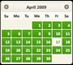

- Interactions
- Draggable
- Droppable
- Resizable
- Selectable
- Sortable
- Widgets
- Accordion
- Autocomplete
- Button
- Datepicker
- Dialog
- Progressbar
- Slider
- Tabs
- Effects
- Color Animation
- Toggle Class
- Add Class
- Remove Class
- Switch Class
- Effect
- Toggle
- Hide
- Show
- Utilities
- Position
- Widget
- About jQuery UI
- Getting Started
- Upgrade Guide
- Changelog
- Roadmap
- Subversion Access
- UI Developer Guidelines
- Theming
- Theming jQuery UI
- jQuery UI CSS Framework
- ThemeRoller application
- Theme Switcher Widget
|
New window
The datepicker is tied to a standard form input field. Focus on the input (click, or use the tab key) to open an interactive calendar in a small overlay. Choose a date, click elsewhere on the page (blur the input), or hit the Esc key to close. If a date is chosen, feedback is shown as the input's value.
The datepicker is tied to a standard form input field. Focus on the input (click, or use the tab key) to open an interactive calendar in a small overlay. Choose a date, click elsewhere on the page (blur the input), or hit the Esc key to close. If a date is chosen, feedback is shown as the input's value.
View Source<script>
$(function() {
$( "#datepicker" ).datepicker();
});
</script>
<div class="demo">
<p>Date: <input type="text" id="datepicker"></p>
</div><!-- End demo -->
<div class="demo-description" style="display: none; ">
<p>The datepicker is tied to a standard form input field. Focus on the input (click, or use the tab key) to open an interactive calendar in a small overlay. Choose a date, click elsewhere on the page (blur the input), or hit the Esc key to close. If a date is chosen, feedback is shown as the input's value.</p>
</div><!-- End demo-description -->
|
![UI Darkness](http://jqueryui.com/themeroller/css/parseTheme.css.php?ffDefault=Segoe+UI%2C+Arial%2C+sans-serif&fwDefault=bold&fsDefault=1.1em&cornerRadius=6px&bgColorHeader=333333&bgTextureHeader=12_gloss_wave.png&bgImgOpacityHeader=25&borderColorHeader=333333&fcHeader=ffffff&iconColorHeader=ffffff&bgColorContent=000000&bgTextureContent=05_inset_soft.png&bgImgOpacityContent=25&borderColorContent=666666&fcContent=ffffff&iconColorContent=cccccc&bgColorDefault=555555&bgTextureDefault=02_glass.png&bgImgOpacityDefault=20&borderColorDefault=666666&fcDefault=eeeeee&iconColorDefault=cccccc&bgColorHover=0078a3&bgTextureHover=02_glass.png&bgImgOpacityHover=40&borderColorHover=59b4d4&fcHover=ffffff&iconColorHover=ffffff&bgColorActive=f58400&bgTextureActive=05_inset_soft.png&bgImgOpacityActive=30&borderColorActive=ffaf0f&fcActive=ffffff&iconColorActive=222222&bgColorHighlight=eeeeee&bgTextureHighlight=03_highlight_soft.png&bgImgOpacityHighlight=80&borderColorHighlight=cccccc&fcHighlight=2e7db2&iconColorHighlight=4b8e0b&bgColorError=ffc73d&bgTextureError=02_glass.png&bgImgOpacityError=40&borderColorError=ffb73d&fcError=111111&iconColorError=a83300&bgColorOverlay=5c5c5c&bgTextureOverlay=01_flat.png&bgImgOpacityOverlay=50&opacityOverlay=80&bgColorShadow=cccccc&bgTextureShadow=01_flat.png&bgImgOpacityShadow=30&opacityShadow=60&thicknessShadow=7px&offsetTopShadow=-7px&offsetLeftShadow=-7px&cornerRadiusShadow=8px "UI Darkness")
![Smoothness](http://jqueryui.com/themeroller/css/parseTheme.css.php?ffDefault=Verdana,Arial,sans-serif&fwDefault=normal&fsDefault=1.1em&cornerRadius=4px&bgColorHeader=cccccc&bgTextureHeader=03_highlight_soft.png&bgImgOpacityHeader=75&borderColorHeader=aaaaaa&fcHeader=222222&iconColorHeader=222222&bgColorContent=ffffff&bgTextureContent=01_flat.png&bgImgOpacityContent=75&borderColorContent=aaaaaa&fcContent=222222&iconColorContent=222222&bgColorDefault=e6e6e6&bgTextureDefault=02_glass.png&bgImgOpacityDefault=75&borderColorDefault=d3d3d3&fcDefault=555555&iconColorDefault=888888&bgColorHover=dadada&bgTextureHover=02_glass.png&bgImgOpacityHover=75&borderColorHover=999999&fcHover=212121&iconColorHover=454545&bgColorActive=ffffff&bgTextureActive=02_glass.png&bgImgOpacityActive=65&borderColorActive=aaaaaa&fcActive=212121&iconColorActive=454545&bgColorHighlight=fbf9ee&bgTextureHighlight=02_glass.png&bgImgOpacityHighlight=55&borderColorHighlight=fcefa1&fcHighlight=363636&iconColorHighlight=2e83ff&bgColorError=fef1ec&bgTextureError=02_glass.png&bgImgOpacityError=95&borderColorError=cd0a0a&fcError=cd0a0a&iconColorError=cd0a0a&bgColorOverlay=aaaaaa&bgTextureOverlay=01_flat.png&bgImgOpacityOverlay=0&opacityOverlay=30&bgColorShadow=aaaaaa&bgTextureShadow=01_flat.png&bgImgOpacityShadow=0&opacityShadow=30&thicknessShadow=8px&offsetTopShadow=-8px&offsetLeftShadow=-8px&cornerRadiusShadow=8px "Smoothness")
![Start](http://jqueryui.com/themeroller/css/parseTheme.css.php?ffDefault=Verdana%2CArial%2Csans-serif&fwDefault=normal&fsDefault=1.1em&cornerRadius=5px&bgColorHeader=2191c0&bgTextureHeader=12_gloss_wave.png&bgImgOpacityHeader=75&borderColorHeader=4297d7&fcHeader=eaf5f7&iconColorHeader=d8e7f3&bgColorContent=fcfdfd&bgTextureContent=06_inset_hard.png&bgImgOpacityContent=100&borderColorContent=a6c9e2&fcContent=222222&iconColorContent=0078ae&bgColorDefault=0078ae&bgTextureDefault=02_glass.png&bgImgOpacityDefault=45&borderColorDefault=77d5f7&fcDefault=ffffff&iconColorDefault=e0fdff&bgColorHover=79c9ec&bgTextureHover=02_glass.png&bgImgOpacityHover=75&borderColorHover=448dae&fcHover=026890&iconColorHover=056b93&bgColorActive=6eac2c&bgTextureActive=12_gloss_wave.png&bgImgOpacityActive=50&borderColorActive=acdd4a&fcActive=ffffff&iconColorActive=f5e175&bgColorHighlight=f8da4e&bgTextureHighlight=02_glass.png&bgImgOpacityHighlight=55&borderColorHighlight=fcd113&fcHighlight=915608&iconColorHighlight=f7a50d&bgColorError=e14f1c&bgTextureError=12_gloss_wave.png&bgImgOpacityError=45&borderColorError=cd0a0a&fcError=ffffff&iconColorError=fcd113&bgColorOverlay=aaaaaa&bgTextureOverlay=01_flat.png&bgImgOpacityOverlay=75&opacityOverlay=30&bgColorShadow=999999&bgTextureShadow=01_flat.png&bgImgOpacityShadow=55&opacityShadow=45&thicknessShadow=0px&offsetTopShadow=5px&offsetLeftShadow=5px&cornerRadiusShadow=5px "Start")
![Redmond](http://jqueryui.com/themeroller/css/parseTheme.css.php?ffDefault=Lucida+Grande,+Lucida+Sans,+Arial,+sans-serif&fwDefault=bold&fsDefault=1.1em&cornerRadius=5px&bgColorHeader=5c9ccc&bgTextureHeader=12_gloss_wave.png&bgImgOpacityHeader=55&borderColorHeader=4297d7&fcHeader=ffffff&iconColorHeader=d8e7f3&bgColorContent=fcfdfd&bgTextureContent=06_inset_hard.png&bgImgOpacityContent=100&borderColorContent=a6c9e2&fcContent=222222&iconColorContent=469bdd&bgColorDefault=dfeffc&bgTextureDefault=02_glass.png&bgImgOpacityDefault=85&borderColorDefault=c5dbec&fcDefault=2e6e9e&iconColorDefault=6da8d5&bgColorHover=d0e5f5&bgTextureHover=02_glass.png&bgImgOpacityHover=75&borderColorHover=79b7e7&fcHover=1d5987&iconColorHover=217bc0&bgColorActive=f5f8f9&bgTextureActive=06_inset_hard.png&bgImgOpacityActive=100&borderColorActive=79b7e7&fcActive=e17009&iconColorActive=f9bd01&bgColorHighlight=fbec88&bgTextureHighlight=01_flat.png&bgImgOpacityHighlight=55&borderColorHighlight=fad42e&fcHighlight=363636&iconColorHighlight=2e83ff&bgColorError=fef1ec&bgTextureError=02_glass.png&bgImgOpacityError=95&borderColorError=cd0a0a&fcError=cd0a0a&iconColorError=cd0a0a&bgColorOverlay=aaaaaa&bgTextureOverlay=01_flat.png&bgImgOpacityOverlay=0&opacityOverlay=30&bgColorShadow=aaaaaa&bgTextureShadow=01_flat.png&bgImgOpacityShadow=0&opacityShadow=30&thicknessShadow=8px&offsetTopShadow=-8px&offsetLeftShadow=-8px&cornerRadiusShadow=8px "Redmond")
![Sunny](http://jqueryui.com/themeroller/css/parseTheme.css.php?ffDefault=Segoe+UI%2C+Arial%2C+sans-serif&fwDefault=bold&fsDefault=1.1em&cornerRadius=8px&bgColorHeader=817865&bgTextureHeader=12_gloss_wave.png&bgImgOpacityHeader=45&borderColorHeader=494437&fcHeader=ffffff&iconColorHeader=fadc7a&bgColorContent=feeebd&bgTextureContent=03_highlight_soft.png&bgImgOpacityContent=100&borderColorContent=8e846b&fcContent=383838&iconColorContent=d19405&bgColorDefault=fece2f&bgTextureDefault=12_gloss_wave.png&bgImgOpacityDefault=60&borderColorDefault=d19405&fcDefault=4c3000&iconColorDefault=3d3d3d&bgColorHover=ffdd57&bgTextureHover=12_gloss_wave.png&bgImgOpacityHover=70&borderColorHover=a45b13&fcHover=381f00&iconColorHover=bd7b00&bgColorActive=ffffff&bgTextureActive=05_inset_soft.png&bgImgOpacityActive=30&borderColorActive=655e4e&fcActive=0074c7&iconColorActive=eb990f&bgColorHighlight=fff9e5&bgTextureHighlight=12_gloss_wave.png&bgImgOpacityHighlight=90&borderColorHighlight=eeb420&fcHighlight=1f1f1f&iconColorHighlight=ed9f26&bgColorError=d34d17&bgTextureError=07_diagonals_medium.png&bgImgOpacityError=20&borderColorError=ffb73d&fcError=ffffff&iconColorError=ffe180&bgColorOverlay=5c5c5c&bgTextureOverlay=01_flat.png&bgImgOpacityOverlay=50&opacityOverlay=80&bgColorShadow=cccccc&bgTextureShadow=01_flat.png&bgImgOpacityShadow=30&opacityShadow=60&thicknessShadow=7px&offsetTopShadow=-7px&offsetLeftShadow=-7px&cornerRadiusShadow=8px "Sunny")
![Overcast](http://jqueryui.com/themeroller/css/parseTheme.css.php?ffDefault=Trebuchet+MS%2C+Helvetica%2C+Arial%2C+sans-serif&fwDefault=bold&fsDefault=1.1em&cornerRadius=6px&bgColorHeader=dddddd&bgTextureHeader=02_glass.png&bgImgOpacityHeader=35&borderColorHeader=bbbbbb&fcHeader=444444&iconColorHeader=999999&bgColorContent=c9c9c9&bgTextureContent=05_inset_soft.png&bgImgOpacityContent=50&borderColorContent=aaaaaa&fcContent=333333&iconColorContent=999999&bgColorDefault=eeeeee&bgTextureDefault=02_glass.png&bgImgOpacityDefault=60&borderColorDefault=cccccc&fcDefault=3383bb&iconColorDefault=70b2e1&bgColorHover=f8f8f8&bgTextureHover=02_glass.png&bgImgOpacityHover=100&borderColorHover=bbbbbb&fcHover=599fcf&iconColorHover=3383bb&bgColorActive=999999&bgTextureActive=06_inset_hard.png&bgImgOpacityActive=75&borderColorActive=999999&fcActive=ffffff&iconColorActive=454545&bgColorHighlight=eeeeee&bgTextureHighlight=01_flat.png&bgImgOpacityHighlight=55&borderColorHighlight=ffffff&fcHighlight=444444&iconColorHighlight=3383bb&bgColorError=c0402a&bgTextureError=01_flat.png&bgImgOpacityError=55&borderColorError=c0402a&fcError=ffffff&iconColorError=fbc856&bgColorOverlay=eeeeee&bgTextureOverlay=01_flat.png&bgImgOpacityOverlay=0&opacityOverlay=80&bgColorShadow=aaaaaa&bgTextureShadow=01_flat.png&bgImgOpacityShadow=0&opacityShadow=60&thicknessShadow=4px&offsetTopShadow=-4px&offsetLeftShadow=-4px&cornerRadiusShadow=0px "Overcast")
![Le Frog](http://jqueryui.com/themeroller/css/parseTheme.css.php?ffDefault=Lucida+Grande%2C+Lucida+Sans%2C+Arial%2C+sans-serif&fwDefault=normal&fsDefault=1.1em&cornerRadius=10px&bgColorHeader=3a8104&bgTextureHeader=03_highlight_soft.png&bgImgOpacityHeader=33&borderColorHeader=3f7506&fcHeader=ffffff&iconColorHeader=ffffff&bgColorContent=285c00&bgTextureContent=05_inset_soft.png&bgImgOpacityContent=10&borderColorContent=72b42d&fcContent=ffffff&iconColorContent=72b42d&bgColorDefault=4ca20b&bgTextureDefault=03_highlight_soft.png&bgImgOpacityDefault=60&borderColorDefault=45930b&fcDefault=ffffff&iconColorDefault=ffffff&bgColorHover=4eb305&bgTextureHover=03_highlight_soft.png&bgImgOpacityHover=50&borderColorHover=8bd83b&fcHover=ffffff&iconColorHover=ffffff&bgColorActive=285c00&bgTextureActive=04_highlight_hard.png&bgImgOpacityActive=30&borderColorActive=72b42d&fcActive=ffffff&iconColorActive=ffffff&bgColorHighlight=fbf5d0&bgTextureHighlight=02_glass.png&bgImgOpacityHighlight=55&borderColorHighlight=f9dd34&fcHighlight=363636&iconColorHighlight=4eb305&bgColorError=ffdc2e&bgTextureError=08_diagonals_thick.png&bgImgOpacityError=95&borderColorError=fad000&fcError=2b2b2b&iconColorError=cd0a0a&bgColorOverlay=444444&bgTextureOverlay=08_diagonals_thick.png&bgImgOpacityOverlay=15&opacityOverlay=30&bgColorShadow=aaaaaa&bgTextureShadow=07_diagonals_small.png&bgImgOpacityShadow=0&opacityShadow=30&thicknessShadow=0px&offsetTopShadow=4px&offsetLeftShadow=4px&cornerRadiusShadow=4px "Le Frog")
![Flick](http://jqueryui.com/themeroller/css/parseTheme.css.php?ffDefault=Helvetica%2C+Arial%2C+sans-serif&fwDefault=bold&fsDefault=1.1em&cornerRadius=2px&bgColorHeader=dddddd&bgTextureHeader=03_highlight_soft.png&bgImgOpacityHeader=50&borderColorHeader=dddddd&fcHeader=444444&iconColorHeader=0073ea&bgColorContent=ffffff&bgTextureContent=01_flat.png&bgImgOpacityContent=75&borderColorContent=dddddd&fcContent=444444&iconColorContent=ff0084&bgColorDefault=f6f6f6&bgTextureDefault=03_highlight_soft.png&bgImgOpacityDefault=100&borderColorDefault=dddddd&fcDefault=0073ea&iconColorDefault=666666&bgColorHover=0073ea&bgTextureHover=03_highlight_soft.png&bgImgOpacityHover=25&borderColorHover=0073ea&fcHover=ffffff&iconColorHover=ffffff&bgColorActive=ffffff&bgTextureActive=02_glass.png&bgImgOpacityActive=65&borderColorActive=dddddd&fcActive=ff0084&iconColorActive=454545&bgColorHighlight=ffffff&bgTextureHighlight=01_flat.png&bgImgOpacityHighlight=55&borderColorHighlight=cccccc&fcHighlight=444444&iconColorHighlight=0073ea&bgColorError=ffffff&bgTextureError=01_flat.png&bgImgOpacityError=55&borderColorError=ff0084&fcError=222222&iconColorError=ff0084&bgColorOverlay=eeeeee&bgTextureOverlay=01_flat.png&bgImgOpacityOverlay=0&opacityOverlay=80&bgColorShadow=aaaaaa&bgTextureShadow=01_flat.png&bgImgOpacityShadow=0&opacityShadow=60&thicknessShadow=4px&offsetTopShadow=-4px&offsetLeftShadow=-4px&cornerRadiusShadow=0px "Flick")
![Pepper Grinder](http://jqueryui.com/themeroller/css/parseTheme.css.php?ffDefault=Trebuchet+MS%2C+Tahoma%2C+Verdana%2C+Arial%2C+sans-serif&fwDefault=bold&fsDefault=1.1em&cornerRadius=6px&bgColorHeader=ffffff&bgTextureHeader=23_fine_grain.png&bgImgOpacityHeader=15&borderColorHeader=d4d1bf&fcHeader=453821&iconColorHeader=b83400&bgColorContent=eceadf&bgTextureContent=23_fine_grain.png&bgImgOpacityContent=10&borderColorContent=d9d6c4&fcContent=1f1f1f&iconColorContent=222222&bgColorDefault=f8f7f6&bgTextureDefault=23_fine_grain.png&bgImgOpacityDefault=10&borderColorDefault=cbc7bd&fcDefault=654b24&iconColorDefault=b83400&bgColorHover=654b24&bgTextureHover=23_fine_grain.png&bgImgOpacityHover=65&borderColorHover=654b24&fcHover=ffffff&iconColorHover=ffffff&bgColorActive=eceadf&bgTextureActive=23_fine_grain.png&bgImgOpacityActive=15&borderColorActive=d9d6c4&fcActive=140f06&iconColorActive=8c291d&bgColorHighlight=f7f3de&bgTextureHighlight=23_fine_grain.png&bgImgOpacityHighlight=15&borderColorHighlight=b2a266&fcHighlight=3a3427&iconColorHighlight=3572ac&bgColorError=b83400&bgTextureError=23_fine_grain.png&bgImgOpacityError=68&borderColorError=681818&fcError=ffffff&iconColorError=fbdb93&bgColorOverlay=6e4f1c&bgTextureOverlay=16_diagonal_maze.png&bgImgOpacityOverlay=20&opacityOverlay=60&bgColorShadow=000000&bgTextureShadow=16_diagonal_maze.png&bgImgOpacityShadow=40&opacityShadow=60&thicknessShadow=5px&offsetTopShadow=0&offsetLeftShadow=-10px&cornerRadiusShadow=18px "Pepper Grinder")
![Eggplant](http://jqueryui.com/themeroller/css/parseTheme.css.php?ffDefault=Lucida+Grande%2C+Lucida+Sans%2C+Arial%2C+sans-serif&fwDefault=bold&fsDefault=1.1em&cornerRadius=6px&bgColorHeader=30273a&bgTextureHeader=03_highlight_soft.png&bgImgOpacityHeader=25&borderColorHeader=231d2b&fcHeader=ffffff&iconColorHeader=a8a3ae&bgColorContent=3d3644&bgTextureContent=12_gloss_wave.png&bgImgOpacityContent=30&borderColorContent=7e7783&fcContent=ffffff&iconColorContent=ffffff&bgColorDefault=dcd9de&bgTextureDefault=03_highlight_soft.png&bgImgOpacityDefault=100&borderColorDefault=dcd9de&fcDefault=665874&iconColorDefault=8d78a5&bgColorHover=eae6ea&bgTextureHover=03_highlight_soft.png&bgImgOpacityHover=100&borderColorHover=d1c5d8&fcHover=734d99&iconColorHover=734d99&bgColorActive=5f5964&bgTextureActive=03_highlight_soft.png&bgImgOpacityActive=45&borderColorActive=7e7783&fcActive=ffffff&iconColorActive=454545&bgColorHighlight=fafafa&bgTextureHighlight=01_flat.png&bgImgOpacityHighlight=55&borderColorHighlight=ffdb1f&fcHighlight=333333&iconColorHighlight=8d78a5&bgColorError=994d53&bgTextureError=01_flat.png&bgImgOpacityError=55&borderColorError=994d53&fcError=ffffff&iconColorError=ebccce&bgColorOverlay=eeeeee&bgTextureOverlay=01_flat.png&bgImgOpacityOverlay=0&opacityOverlay=80&bgColorShadow=aaaaaa&bgTextureShadow=01_flat.png&bgImgOpacityShadow=0&opacityShadow=60&thicknessShadow=4px&offsetTopShadow=-4px&offsetLeftShadow=-4px&cornerRadiusShadow=0px "Eggplant")
![Dark Hive](http://jqueryui.com/themeroller/css/parseTheme.css.php?ffDefault=Verdana%2C+Arial%2C+sans-serif&fwDefault=normal&fsDefault=1.1em&cornerRadius=6px&bgColorHeader=444444&bgTextureHeader=03_highlight_soft.png&bgImgOpacityHeader=44&borderColorHeader=333333&fcHeader=ffffff&iconColorHeader=ffffff&bgColorContent=000000&bgTextureContent=14_loop.png&bgImgOpacityContent=25&borderColorContent=555555&fcContent=ffffff&iconColorContent=cccccc&bgColorDefault=222222&bgTextureDefault=03_highlight_soft.png&bgImgOpacityDefault=35&borderColorDefault=444444&fcDefault=eeeeee&iconColorDefault=cccccc&bgColorHover=003147&bgTextureHover=03_highlight_soft.png&bgImgOpacityHover=33&borderColorHover=0b93d5&fcHover=ffffff&iconColorHover=ffffff&bgColorActive=0972a5&bgTextureActive=04_highlight_hard.png&bgImgOpacityActive=20&borderColorActive=26b3f7&fcActive=ffffff&iconColorActive=222222&bgColorHighlight=eeeeee&bgTextureHighlight=03_highlight_soft.png&bgImgOpacityHighlight=80&borderColorHighlight=cccccc&fcHighlight=2e7db2&iconColorHighlight=4b8e0b&bgColorError=ffc73d&bgTextureError=02_glass.png&bgImgOpacityError=40&borderColorError=ffb73d&fcError=111111&iconColorError=a83300&bgColorOverlay=5c5c5c&bgTextureOverlay=01_flat.png&bgImgOpacityOverlay=50&opacityOverlay=80&bgColorShadow=cccccc&bgTextureShadow=01_flat.png&bgImgOpacityShadow=30&opacityShadow=60&thicknessShadow=7px&offsetTopShadow=-7px&offsetLeftShadow=-7px&cornerRadiusShadow=8px "Dark Hive")
![Blitzer](http://jqueryui.com/themeroller/css/parseTheme.css.php?ffDefault=Arial,sans-serif&fwDefault=bold&fsDefault=1.1em&cornerRadius=6px&bgColorHeader=cc0000&bgTextureHeader=03_highlight_soft.png&bgImgOpacityHeader=15&borderColorHeader=e3a1a1&fcHeader=ffffff&iconColorHeader=ffffff&bgColorContent=ffffff&bgTextureContent=01_flat.png&bgImgOpacityContent=75&borderColorContent=eeeeee&fcContent=333333&iconColorContent=cc0000&bgColorDefault=eeeeee&bgTextureDefault=04_highlight_hard.png&bgImgOpacityDefault=100&borderColorDefault=d8dcdf&fcDefault=004276&iconColorDefault=cc0000&bgColorHover=f6f6f6&bgTextureHover=04_highlight_hard.png&bgImgOpacityHover=100&borderColorHover=cdd5da&fcHover=111111&iconColorHover=cc0000&bgColorActive=ffffff&bgTextureActive=01_flat.png&bgImgOpacityActive=65&borderColorActive=eeeeee&fcActive=cc0000&iconColorActive=cc0000&bgColorHighlight=fbf8ee&bgTextureHighlight=02_glass.png&bgImgOpacityHighlight=55&borderColorHighlight=fcd3a1&fcHighlight=444444&iconColorHighlight=004276&bgColorError=f3d8d8&bgTextureError=08_diagonals_thick.png&bgImgOpacityError=75&borderColorError=cc0000&fcError=2e2e2e&iconColorError=cc0000&bgColorOverlay=a6a6a6&bgTextureOverlay=09_dots_small.png&bgImgOpacityOverlay=65&opacityOverlay=40&bgColorShadow=333333&bgTextureShadow=01_flat.png&bgImgOpacityShadow=0&opacityShadow=10&thicknessShadow=8px&offsetTopShadow=-8px&offsetLeftShadow=-8px&cornerRadiusShadow=8px "Blitzer")
![Humanity](http://jqueryui.com/themeroller/css/parseTheme.css.php?tr=ffDefault=Helvetica,Arial,sans-serif&fwDefault=normal&fsDefault=1.1em&cornerRadius=6px&bgColorHeader=cb842e&bgTextureHeader=02_glass.png&bgImgOpacityHeader=25&borderColorHeader=d49768&fcHeader=ffffff&iconColorHeader=ffffff&bgColorContent=f4f0ec&bgTextureContent=05_inset_soft.png&bgImgOpacityContent=100&borderColorContent=e0cfc2&fcContent=1e1b1d&iconColorContent=c47a23&bgColorDefault=ede4d4&bgTextureDefault=02_glass.png&bgImgOpacityDefault=70&borderColorDefault=cdc3b7&fcDefault=3f3731&iconColorDefault=f08000&bgColorHover=f5f0e5&bgTextureHover=02_glass.png&bgImgOpacityHover=100&borderColorHover=f5ad66&fcHover=a46313&iconColorHover=f08000&bgColorActive=f4f0ec&bgTextureActive=04_highlight_hard.png&bgImgOpacityActive=100&borderColorActive=e0cfc2&fcActive=b85700&iconColorActive=f35f07&bgColorHighlight=f5f5b5&bgTextureHighlight=04_highlight_hard.png&bgImgOpacityHighlight=75&borderColorHighlight=d9bb73&fcHighlight=060200&iconColorHighlight=cb672b&bgColorError=fee4bd&bgTextureError=04_highlight_hard.png&bgImgOpacityError=65&borderColorError=f8893f&fcError=592003&iconColorError=ff7519&bgColorOverlay=aaaaaa&bgTextureOverlay=01_flat.png&bgImgOpacityOverlay=75&opacityOverlay=30&bgColorShadow=aaaaaa&bgTextureShadow=01_flat.png&bgImgOpacityShadow=75&opacityShadow=30&thicknessShadow=8px&offsetTopShadow=-8px&offsetLeftShadow=-8px&cornerRadiusShadow=8px "Humanity")
![Hot Sneaks](http://jqueryui.com/themeroller/css/parseTheme.css.php?ffDefault=Gill+Sans,Arial,sans-serif&fwDefault=bold&fsDefault=1.2em&cornerRadius=4px&bgColorHeader=35414f&bgTextureHeader=09_dots_small.png&bgImgOpacityHeader=35&borderColorHeader=2c4359&fcHeader=e1e463&iconColorHeader=e1e463&bgColorContent=ffffff&bgTextureContent=01_flat.png&bgImgOpacityContent=75&borderColorContent=aaaaaa&fcContent=2c4359&iconColorContent=c02669&bgColorDefault=93c3cd&bgTextureDefault=07_diagonals_small.png&bgImgOpacityDefault=50&borderColorDefault=93c3cd&fcDefault=333333&iconColorDefault=ffffff&bgColorHover=ccd232&bgTextureHover=07_diagonals_small.png&bgImgOpacityHover=75&borderColorHover=999999&fcHover=212121&iconColorHover=454545&bgColorActive=db4865&bgTextureActive=07_diagonals_small.png&bgImgOpacityActive=40&borderColorActive=ff6b7f&fcActive=ffffff&iconColorActive=ffffff&bgColorHighlight=ffff38&bgTextureHighlight=10_dots_medium.png&bgImgOpacityHighlight=80&borderColorHighlight=b4d100&fcHighlight=363636&iconColorHighlight=88a206&bgColorError=ff3853&bgTextureError=07_diagonals_small.png&bgImgOpacityError=50&borderColorError=ff6b7f&fcError=ffffff&iconColorError=ffeb33&bgColorOverlay=f7f7ba&bgTextureOverlay=11_white_lines.png&bgImgOpacityOverlay=85&opacityOverlay=80&bgColorShadow=ba9217&bgTextureShadow=01_flat.png&bgImgOpacityShadow=75&opacityShadow=20&thicknessShadow=10px&offsetTopShadow=8px&offsetLeftShadow=8px&cornerRadiusShadow=5px "Hot Sneaks")
![Excite Bike](http://jqueryui.com/themeroller/css/parseTheme.css.php?ffDefault=segoe+ui,+Arial,+sans-serif&fwDefault=bold&fsDefault=1.1em&cornerRadius=3px&bgColorHeader=f9f9f9&bgTextureHeader=03_highlight_soft.png&bgImgOpacityHeader=100&borderColorHeader=cccccc&fcHeader=e69700&iconColorHeader=5fa5e3&bgColorContent=eeeeee&bgTextureContent=06_inset_hard.png&bgImgOpacityContent=100&borderColorContent=aaaaaa&fcContent=222222&iconColorContent=0a82eb&bgColorDefault=1484e6&bgTextureDefault=08_diagonals_thick.png&bgImgOpacityDefault=22&borderColorDefault=ffffff&fcDefault=ffffff&iconColorDefault=fcdd4a&bgColorHover=2293f7&bgTextureHover=08_diagonals_thick.png&bgImgOpacityHover=26&borderColorHover=2293f7&fcHover=ffffff&iconColorHover=ffffff&bgColorActive=e69700&bgTextureActive=08_diagonals_thick.png&bgImgOpacityActive=20&borderColorActive=e69700&fcActive=ffffff&iconColorActive=ffffff&bgColorHighlight=c5ddfc&bgTextureHighlight=07_diagonals_small.png&bgImgOpacityHighlight=25&borderColorHighlight=ffffff&fcHighlight=333333&iconColorHighlight=0b54d5&bgColorError=e69700&bgTextureError=08_diagonals_thick.png&bgImgOpacityError=20&borderColorError=e69700&fcError=ffffff&iconColorError=ffffff&bgColorOverlay=e6b900&bgTextureOverlay=01_flat.png&bgImgOpacityOverlay=0&opacityOverlay=30&bgColorShadow=e69700&bgTextureShadow=01_flat.png&bgImgOpacityShadow=0&opacityShadow=20&thicknessShadow=0px&offsetTopShadow=6px&offsetLeftShadow=6px&cornerRadiusShadow=3px "Excite Bike")
![Vader](http://jqueryui.com/themeroller/css/parseTheme.css.php?tr&ffDefault=Helvetica,+Arial,+sans-serif&fwDefault=normal&fsDefault=1.1&fsDefaultUnit=em&cornerRadius=5&cornerRadiusUnit=px&bgColorHeader=888888&bgTextureHeader=04_highlight_hard.png&bgImgOpacityHeader=15&borderColorHeader=404040&fcHeader=ffffff&iconColorHeader=cccccc&bgColorContent=121212&bgTextureContent=12_gloss_wave.png&bgImgOpacityContent=16&borderColorContent=404040&fcContent=eeeeee&iconColorContent=bbbbbb&bgColorDefault=adadad&bgTextureDefault=03_highlight_soft.png&bgImgOpacityDefault=35&borderColorDefault=cccccc&fcDefault=333333&iconColorDefault=666666&bgColorHover=dddddd&bgTextureHover=03_highlight_soft.png&bgImgOpacityHover=60&borderColorHover=dddddd&fcHover=000000&iconColorHover=c98000&bgColorActive=121212&bgTextureActive=05_inset_soft.png&bgImgOpacityActive=15&borderColorActive=000000&fcActive=ffffff&iconColorActive=f29a00&bgColorHighlight=555555&bgTextureHighlight=04_highlight_hard.png&bgImgOpacityHighlight=55&borderColorHighlight=404040&fcHighlight=cccccc&iconColorHighlight=aaaaaa&bgColorError=fef1ec&bgTextureError=02_glass.png&bgImgOpacityError=95&borderColorError=cd0a0a&fcError=cd0a0a&iconColorError=cd0a0a "Vader")
![Dot Luv](http://jqueryui.com/themeroller/css/parseTheme.css.php?ffDefault=Arial,+sans-serif&fwDefault=bold&fsDefault=1.3em&cornerRadius=4px&bgColorHeader=0b3e6f&bgTextureHeader=08_diagonals_thick.png&bgImgOpacityHeader=15&borderColorHeader=0b3e6f&fcHeader=f6f6f6&iconColorHeader=98d2fb&bgColorContent=111111&bgTextureContent=12_gloss_wave.png&bgImgOpacityContent=20&borderColorContent=000000&fcContent=d9d9d9&iconColorContent=9ccdfc&bgColorDefault=333333&bgTextureDefault=09_dots_small.png&bgImgOpacityDefault=20&borderColorDefault=333333&fcDefault=ffffff&iconColorDefault=9ccdfc&bgColorHover=00498f&bgTextureHover=09_dots_small.png&bgImgOpacityHover=40&borderColorHover=222222&fcHover=ffffff&iconColorHover=ffffff&bgColorActive=292929&bgTextureActive=01_flat.png&bgImgOpacityActive=40&borderColorActive=096ac8&fcActive=75abff&iconColorActive=00498f&bgColorHighlight=0b58a2&bgTextureHighlight=10_dots_medium.png&bgImgOpacityHighlight=30&borderColorHighlight=052f57&fcHighlight=ffffff&iconColorHighlight=ffffff&bgColorError=a32d00&bgTextureError=09_dots_small.png&bgImgOpacityError=30&borderColorError=cd0a0a&fcError=ffffff&iconColorError=ffffff&bgColorOverlay=aaaaaa&bgTextureOverlay=01_flat.png&bgImgOpacityOverlay=0&opacityOverlay=30&bgColorShadow=aaaaaa&bgTextureShadow=01_flat.png&bgImgOpacityShadow=0&opacityShadow=30&thicknessShadow=8px&offsetTopShadow=-8px&offsetLeftShadow=-8px&cornerRadiusShadow=8px "Dot Luv")
![Mint Choc](http://jqueryui.com/themeroller/css/parseTheme.css.php?ffDefault=Segoe+UI%2C+Helvetica%2C+Arial%2C+sans-serif&fwDefault=bold&fsDefault=1.1em&cornerRadius=4px&bgColorHeader=453326&bgTextureHeader=12_gloss_wave.png&bgImgOpacityHeader=25&borderColorHeader=695649&fcHeader=e3ddc9&iconColorHeader=e3ddc9&bgColorContent=201913&bgTextureContent=05_inset_soft.png&bgImgOpacityContent=10&borderColorContent=9c947c&fcContent=ffffff&iconColorContent=222222&bgColorDefault=1c160d&bgTextureDefault=12_gloss_wave.png&bgImgOpacityDefault=20&borderColorDefault=695444&fcDefault=9bcc60&iconColorDefault=9bcc60&bgColorHover=44372c&bgTextureHover=12_gloss_wave.png&bgImgOpacityHover=30&borderColorHover=9c947c&fcHover=baec7e&iconColorHover=add978&bgColorActive=201913&bgTextureActive=03_highlight_soft.png&bgImgOpacityActive=20&borderColorActive=9c947c&fcActive=e3ddc9&iconColorActive=e3ddc9&bgColorHighlight=619226&bgTextureHighlight=03_highlight_soft.png&bgImgOpacityHighlight=20&borderColorHighlight=add978&fcHighlight=ffffff&iconColorHighlight=ffffff&bgColorError=5f391b&bgTextureError=02_glass.png&bgImgOpacityError=15&borderColorError=5f391b&fcError=ffffff&iconColorError=f1fd86&bgColorOverlay=aaaaaa&bgTextureOverlay=01_flat.png&bgImgOpacityOverlay=0&opacityOverlay=30&bgColorShadow=aaaaaa&bgTextureShadow=01_flat.png&bgImgOpacityShadow=0&opacityShadow=30&thicknessShadow=8px&offsetTopShadow=-8px&offsetLeftShadow=-8px&cornerRadiusShadow=8px "Mint Choc")
![Black Tie](http://jqueryui.com/themeroller/css/parseTheme.css.php?ffDefault=Verdana,+Arial,+sans-serif&fwDefault=normal&fsDefault=1.1em&cornerRadius=4px&bgColorHeader=333333&bgTextureHeader=08_diagonals_thick.png&bgImgOpacityHeader=8&borderColorHeader=a3a3a3&fcHeader=eeeeee&iconColorHeader=bbbbbb&bgColorContent=f9f9f9&bgTextureContent=04_highlight_hard.png&bgImgOpacityContent=100&borderColorContent=cccccc&fcContent=222222&iconColorContent=222222&bgColorDefault=111111&bgTextureDefault=02_glass.png&bgImgOpacityDefault=40&borderColorDefault=777777&fcDefault=e3e3e3&iconColorDefault=ededed&bgColorHover=1c1c1c&bgTextureHover=02_glass.png&bgImgOpacityHover=55&borderColorHover=000000&fcHover=ffffff&iconColorHover=ffffff&bgColorActive=ffffff&bgTextureActive=01_flat.png&bgImgOpacityActive=65&borderColorActive=cccccc&fcActive=222222&iconColorActive=222222&bgColorHighlight=ffeb80&bgTextureHighlight=06_inset_hard.png&bgImgOpacityHighlight=55&borderColorHighlight=ffde2e&fcHighlight=363636&iconColorHighlight=4ca300&bgColorError=cd0a0a&bgTextureError=06_inset_hard.png&bgImgOpacityError=45&borderColorError=9e0505&fcError=ffffff&iconColorError=ffcf29&bgColorOverlay=aaaaaa&bgTextureOverlay=04_highlight_hard.png&bgImgOpacityOverlay=40&opacityOverlay=30&bgColorShadow=aaaaaa&bgTextureShadow=03_highlight_soft.png&bgImgOpacityShadow=50&opacityShadow=20&thicknessShadow=8px&offsetTopShadow=-8px&offsetLeftShadow=-8px&cornerRadiusShadow=8px "Black Tie")
![Trontastic](http://jqueryui.com/themeroller/css/parseTheme.css.php?ffDefault=Segoe+UI,+Helvetica,+Arial,+sans-serif&fwDefault=bold&fsDefault=1.1em&cornerRadius=6px&bgColorHeader=9fda58&bgTextureHeader=12_gloss_wave.png&bgImgOpacityHeader=85&borderColorHeader=000000&fcHeader=222222&iconColorHeader=1f1f1f&bgColorContent=000000&bgTextureContent=12_gloss_wave.png&bgImgOpacityContent=55&borderColorContent=4a4a4a&fcContent=ffffff&iconColorContent=9fda58&bgColorDefault=0a0a0a&bgTextureDefault=02_glass.png&bgImgOpacityDefault=40&borderColorDefault=1b1613&fcDefault=b8ec79&iconColorDefault=b8ec79&bgColorHover=000000&bgTextureHover=02_glass.png&bgImgOpacityHover=60&borderColorHover=000000&fcHover=96f226&iconColorHover=b8ec79&bgColorActive=4c4c4c&bgTextureActive=01_flat.png&bgImgOpacityActive=0&borderColorActive=696969&fcActive=ffffff&iconColorActive=ffffff&bgColorHighlight=f1fbe5&bgTextureHighlight=02_glass.png&bgImgOpacityHighlight=55&borderColorHighlight=8cce3b&fcHighlight=030303&iconColorHighlight=000000&bgColorError=f6ecd5&bgTextureError=12_gloss_wave.png&bgImgOpacityError=95&borderColorError=f1ac88&fcError=74736d&iconColorError=cd0a0a&bgColorOverlay=262626&bgTextureOverlay=07_diagonals_small.png&bgImgOpacityOverlay=50&opacityOverlay=30&bgColorShadow=303030&bgTextureShadow=01_flat.png&bgImgOpacityShadow=0&opacityShadow=50&thicknessShadow=6px&offsetTopShadow=-6px&offsetLeftShadow=-6px&cornerRadiusShadow=12px "Trontastic")
![Swanky Purse](http://jqueryui.com/themeroller/css/parseTheme.css.php?ffDefault=Georgia%2C+Verdana%2CArial%2Csans-serif&fwDefault=bold&fsDefault=1.2em&cornerRadius=5px&bgColorHeader=261803&bgTextureHeader=13_diamond.png&bgImgOpacityHeader=8&borderColorHeader=baaa5a&fcHeader=eacd86&iconColorHeader=e9cd86&bgColorContent=443113&bgTextureContent=13_diamond.png&bgImgOpacityContent=8&borderColorContent=efec9f&fcContent=efec9f&iconColorContent=efec9f&bgColorDefault=4f4221&bgTextureDefault=13_diamond.png&bgImgOpacityDefault=10&borderColorDefault=362917&fcDefault=f8eec9&iconColorDefault=e8e2b5&bgColorHover=675423&bgTextureHover=13_diamond.png&bgImgOpacityHover=25&borderColorHover=362917&fcHover=f8eec9&iconColorHover=f2ec64&bgColorActive=443113&bgTextureActive=13_diamond.png&bgImgOpacityActive=8&borderColorActive=efec9f&fcActive=f9f2bd&iconColorActive=f9f2bd&bgColorHighlight=d5ac5d&bgTextureHighlight=13_diamond.png&bgImgOpacityHighlight=25&borderColorHighlight=362917&fcHighlight=060200&iconColorHighlight=070603&bgColorError=fee4bd&bgTextureError=04_highlight_hard.png&bgImgOpacityError=65&borderColorError=c26629&fcError=803f1e&iconColorError=ff7519&bgColorOverlay=372806&bgTextureOverlay=13_diamond.png&bgImgOpacityOverlay=20&opacityOverlay=80&bgColorShadow=ddd4b0&bgTextureShadow=01_flat.png&bgImgOpacityShadow=75&opacityShadow=30&thicknessShadow=8px&offsetTopShadow=-8px&offsetLeftShadow=-8px&cornerRadiusShadow=12px "Swanky Purse")
![Cupertino](http://jqueryui.com/themeroller/css/parseTheme.css.php?ffDefault=Lucida+Grande%2C+Lucida+Sans%2C+Arial%2C+sans-serif&fwDefault=bold&fsDefault=1.1em&cornerRadius=6px&bgColorHeader=deedf7&bgTextureHeader=03_highlight_soft.png&bgImgOpacityHeader=100&borderColorHeader=aed0ea&fcHeader=222222&iconColorHeader=72a7cf&bgColorContent=f2f5f7&bgTextureContent=04_highlight_hard.png&bgImgOpacityContent=100&borderColorContent=dddddd&fcContent=362b36&iconColorContent=72a7cf&bgColorDefault=d7ebf9&bgTextureDefault=02_glass.png&bgImgOpacityDefault=80&borderColorDefault=aed0ea&fcDefault=2779aa&iconColorDefault=3d80b3&bgColorHover=e4f1fb&bgTextureHover=02_glass.png&bgImgOpacityHover=100&borderColorHover=74b2e2&fcHover=0070a3&iconColorHover=2694e8&bgColorActive=3baae3&bgTextureActive=02_glass.png&bgImgOpacityActive=50&borderColorActive=2694e8&fcActive=ffffff&iconColorActive=ffffff&bgColorHighlight=ffef8f&bgTextureHighlight=03_highlight_soft.png&bgImgOpacityHighlight=25&borderColorHighlight=f9dd34&fcHighlight=363636&iconColorHighlight=2e83ff&bgColorError=cd0a0a&bgTextureError=01_flat.png&bgImgOpacityError=15&borderColorError=cd0a0a&fcError=ffffff&iconColorError=ffffff&bgColorOverlay=eeeeee&bgTextureOverlay=08_diagonals_thick.png&bgImgOpacityOverlay=90&opacityOverlay=80&bgColorShadow=000000&bgTextureShadow=04_highlight_hard.png&bgImgOpacityShadow=70&opacityShadow=30&thicknessShadow=7px&offsetTopShadow=-7px&offsetLeftShadow=-7px&cornerRadiusShadow=8px){kind=link}
![ South Street](http://jqueryui.com/themeroller/css/parseTheme.css.php?ffDefault=segoe+ui%2C+Arial%2C+sans-serif&fwDefault=bold&fsDefault=1.1em&cornerRadius=6px&bgColorHeader=ece8da&bgTextureHeader=12_gloss_wave.png&bgImgOpacityHeader=100&borderColorHeader=d4ccb0&fcHeader=433f38&iconColorHeader=847e71&bgColorContent=f5f3e5&bgTextureContent=04_highlight_hard.png&bgImgOpacityContent=100&borderColorContent=dfd9c3&fcContent=312e25&iconColorContent=808080&bgColorDefault=459e00&bgTextureDefault=04_highlight_hard.png&bgImgOpacityDefault=15&borderColorDefault=327E04&fcDefault=ffffff&iconColorDefault=eeeeee&bgColorHover=67b021&bgTextureHover=03_highlight_soft.png&bgImgOpacityHover=25&borderColorHover=327E04&fcHover=ffffff&iconColorHover=ffffff&bgColorActive=fafaf4&bgTextureActive=04_highlight_hard.png&bgImgOpacityActive=100&borderColorActive=d4ccb0&fcActive=459e00&iconColorActive=8DC262&bgColorHighlight=fcf0ba&bgTextureHighlight=02_glass.png&bgImgOpacityHighlight=55&borderColorHighlight=e8e1b5&fcHighlight=363636&iconColorHighlight=8DC262&bgColorError=ffedad&bgTextureError=03_highlight_soft.png&bgImgOpacityError=95&borderColorError=e3a345&fcError=cd5c0a&iconColorError=cd0a0a&bgColorOverlay=2b2922&bgTextureOverlay=05_inset_soft.png&bgImgOpacityOverlay=15&opacityOverlay=90&bgColorShadow=cccccc&bgTextureShadow=04_highlight_hard.png&bgImgOpacityShadow=95&opacityShadow=20&thicknessShadow=12px&offsetTopShadow=-12px&offsetLeftShadow=-12px&cornerRadiusShadow=10px){kind=link}